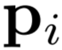
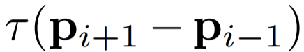
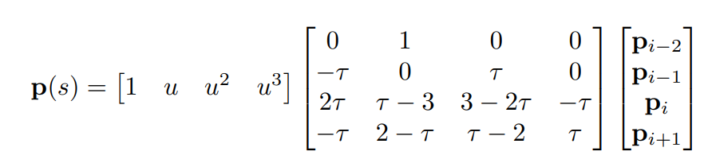
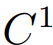
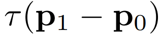
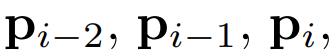
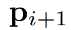
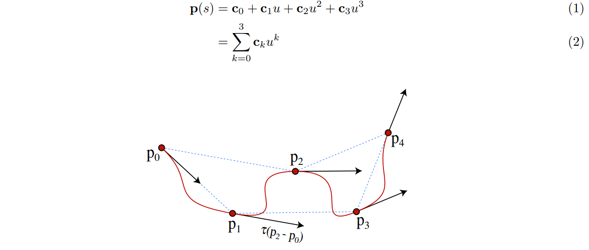

Сплайновете на Catmull-Rom са семейство от кубични интерполиращи сплайнове, формулирани така, че допирателната при всяка точка
 се изчислява с помощта на предишната и следващата точка на сплайна,
. Геометричната матрица се дава от:

Сплайновете на Catmull-Rom имат 
непрекъснатост, локален контрол и интерполация, но не лежат в конвекса
корпус на техните контролни точки. Обърнете внимание, че допирателната в точка не е ясно дефинирана; често задаваме това на , въпреки че
това не е необходимо за присвояването (можем просто да приемем, че кривата не интерполира своите крайни точки).
Параметърът τ е известен като „напрежение“ и влияе върху това колко рязко се огъва кривата при (интерполираните)
контролните точки (фигура 2). Често се задава на 1/2, но може да се използва всяка разумна стойност за това присвояване.
Извеждане:
Нека изберем един сегмент, p(s). Да предположим, че се определя от 4 контролни точки -
 , като на фигура 3.
Знаем, че тъй като е кубичен, може да се изрази чрез полиномната форма,

Фигура 1: Catmull-Rom spline
Фигура 2: Ефектът на τ
Фигура 3: Catmull-Rom spline derivation
Фигура 4: Функции за смесване на Catmull-Rom за τ = 1/2